flowchart LR
A[콜매도/풋매수/주식매수/자금차입]
A --> B[현금흐름:+3-3-19+20.505=1.505]
B --> C[주가>행사가격:콜옵션 행사, K-S+S+D-K+D=0]
B --> D[주가<행사가격:풋옵션 행사, K-S+S+D-K+D=0]
선물옵션 HW(~midterm)
Chapter3
Problem 3.4 (Hedging with Futures)
A company has a $20 million portfolio with a beta of 1.2. It would like to use futures contracts on a stock index to hedge its risk. The index futures price currently stading at 1080, and each contract is for delivery of $250 times the index.
what is the hedge that minimizes risk?
what should the company do if it wants to reduce the beta of the portfolio to 0.6?
Solving
먼저, 선물 1계약의 가치는 \(1,080\times 250USD=270,000USD\)입니다.
리스크 최소화를 위한 최적 헷지비율은 \(\hat{h}^*=\beta\times\frac{V_{portfolio}}{V_{futures contract}}\)이므로,
리스크 최소화를 위해서는 \(\hat{h}^*=1.2\times\frac{20,000,000}{270,000}=88.89\approx 89계약\)을 매도하면 된다.
베타를 0.6으로 줄이기 위해서는 포트폴리오 베타를 0.6만큼 헷지하면 된다. \(h=0.6\times\frac{20,000,000}{270,000}=44.44\approx 44계약\)을 매도하면 된다.
Problem 3.24 (CAPM)
A portfolio manager has maintained an actively managed portfolio with a beta of 0.2. During the last year, the risk-free rate was 5% and equities performed very badly providing a return of -30%. The portfolio manager produced a return of -10% and claims that in the circumstances it was a good performance. Discuss this claim.
Solving
CAPM에 근거하여 수익률을 산출할 때, 매니저의 주장은 옳지 않다.
먼저, CAPM에 근거한 포트폴리오 수익률은 \(R_{portfolio}=r_f+\beta(r_{market}-r_f)\)이며, 여기에 따르면 베타가 0.2인 주식포트폴리오의 기대수익률은 무위험자산 : 시장 = 8:2로 투자한 시장포트폴리오의 수익률인 \(5\% + 0.2(-30\%-5\%)=-2\%\)이다.
즉, 매니저가 good performance라는 의미는 -2%보다 높은 수익률을 달성해서 시장포트폴리오를 out-perform한다는 의미인데, 이를 8%나 하회하는 -10%의 성적을 거두었으니 좋은 성과를 냈다고 볼 수 없다.
잘못푼 예시
시장 전체의 수익률이 -30%일 때, 베타가 0.2인 주식포트폴리오가 시장을 beat하는 수익률은 \(0.2\times -30\% =-6\%\)이다. 포트폴리오가 good performance라는 것은 보통 시장을 out-perform한 경우를 의미하는데, 수익률이 -6%를 하회하는 -10%이므로 좋은 성과를 냈다고 보기 어렵다.
Problem 3.25 (Changing Beta)
It is July 16. A company has a portfolio of stocks worth $100million. The beta of the portfolio is 1.2. The company would like to use the December futures contract on a stock index to change beta of the portfolio to 0.5 during the period July 16 to November 16. The index is currently 2,000 and each contract is on $250 times the index.
What position should the company take?
Suppose that the company changes its mind and decides to increase the beta of the portfolio from 1.2 to 1.5. What position in futures contracts should it take?
Solving
Problem 3.4와 동일한 방식이다. 먼저, 선물 1계약의 가치는 \(2,000\times 250USD=500,000USD\)이며,
포트폴리오 베타를 0.5로 줄이려면 베타를 0.7만큼 헷지하면 된다. \(h=0.7\times\frac{100,000,000}{500,000}=140계약\)을 매도 하면 된다.
포트폴리오 베타를 1.5로 늘리려면 베타를 -0.3만큼 헷지하면 된다. 즉, 매도헷지 대신 선물매수를 통해 베타를 0.3만큼 늘리면 된다. \(h=-0.3\times\frac{100,000,000}{500,000}=-60계약 매도=60계약 매수\)하면 된다.
Chapter4
Problem 4.2
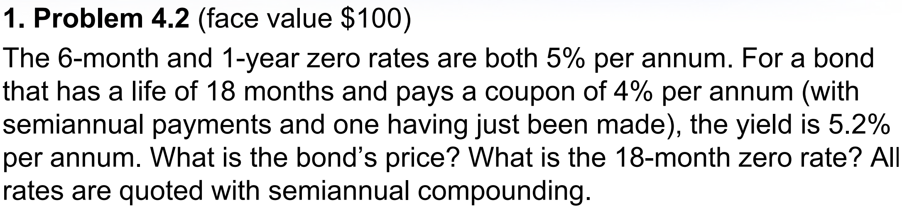
Solving
\[Price=\frac{2}{(1+5.2\%/2)^{1}}+\frac{2}{(1+5.2\%/2)^{2}}+\frac{102}{(1+5.2\%/2)^{3}}=98.29\]
\[\frac{2}{(1+5\%/2)^{1}}+\frac{2}{(1+5\%/2)^{2}}+\frac{102}{(1+z_{1.5}/2)^{3}},\;z_{1.5}=5.204\%\]
Problem 4.14
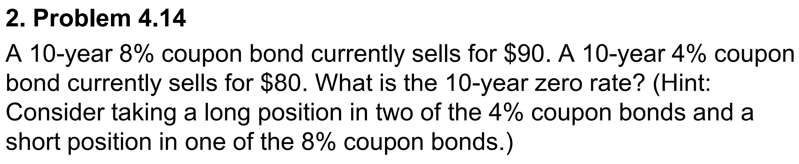
Solving
4% 쿠폰 채권을 액면 $200만큼 매수한다면, 액면 $100의 8% 쿠폰 채권과 액면 $100의 10년 무이표채 채권을 매수한 것과 동일한 현금흐름이 발생한다.
이 경우, 10년 무이표채 채권의 가격은 $160-$90=$70이며 10-year zero rate는 다음과 같다. \[70=\frac{100}{(1+z_{10})^{10}},\;z_{10}\approx 3.63\%\]
Problem 4.29
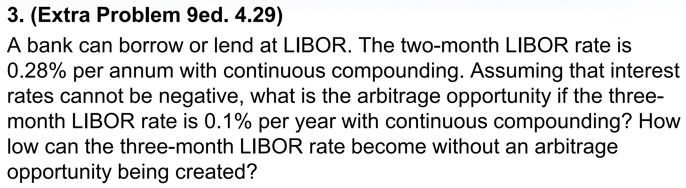
Solving
먼저, 2개월 후 1개월간 Libor Foward rate는 다음과 같다.
\[F_{2m,1m}=\frac{\frac{3}{12}0.1\%-\frac{2}{12}0.28\%}{\frac{1}{12}}=0.3\%-0.56\%=-0.26\%\]
그러나, 이자율은 음수가 될 수 없으므로 선도이자율은 0%이다. 빌려주는 사람 입장에서, 안빌려주고 현금을 보유하면 이자율은 0%이므로 이는 자연스러운 현상이다.
이 때, Libor금리로 3개월간 자금을 빌리고 2개월간 Libor로 빌려준 다음 3개월까지는 현금을 보유(또는 0%에 빌려줌)한다면 무위험 차익을 얻을 수 있다.
차익거래가 발생하지 않으려면, 선도이자율의 균형가격이 0%까지 상승해야 한다.
\[F_{2m,1m}=0\%=\frac{\frac{3}{12}Libor_{3m}-\frac{2}{12}0.28\%}{\frac{1}{12}}\Rightarrow Libor_{3m}\approx 0.1867\%\]
그러기 위해서는 약 0.1867%까지 3개월 Libor가 상승해야 한다.
Problem 4.39
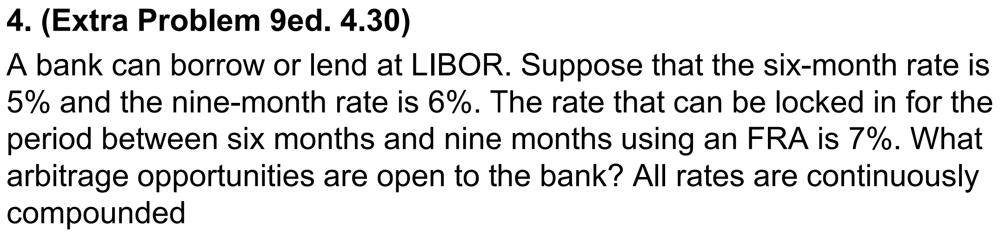
Solving
먼저, 6개월 및 9개월 금리로부터 \(F_{6m,3m}\)의 균형가격을 산출하면,
\[F_{6m,3m}=\frac{\frac{9}{12}6\%-\frac{6}{12}5\%}{\frac{3}{12}}=8\%\]
그러나, 현재 FRA 계약금리는 7%이므로 1%p만큼 저평가되어있다.
따라서,
- 6개월간 5%로 자금을 빌리고
- 9개월간 6%에 자금을 빌려주고,
- FRA 매수계약(변동금리 수취 및 고정금리 지급)을 동일한 명목금액만큼 체결 -> 6개월 후 9개월까지 3개월간 Libor금리로 자금을 빌리면 FRA 계약금리인 7%로 빌리는 효과
9개월간 effective rate는 \(\frac{12}{9}(\frac{6}{12}5\%+\frac{3}{12}7\%)\approx 5.6667\%\)이므로, \(0.333\%\)만큼 무위험 차익을 만들 수 있다.
Chapter5
Problem 5.1
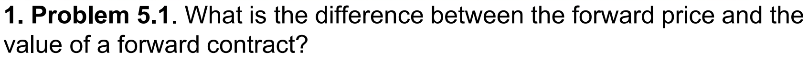
Forward price : 선도가격
선도계약 체결시 계약당사자가 합의한 기초자산의 인도가격을 말하며, 기초자산의 현재가격과 선도계약 만기까지 기초자산을 보유하면서 발생하는 비용과 수익을 통해 이론적으로 산출할 수 있습니다.
Value of a forward contract : 선도계약의 가치
과거에 체결된 선도계약을 현재시점에서 평가할 때, 현재시점에서 동일한 선도계약을 체결한다면 예상되는 선도가격과 과거 체결시점의 선도가격의 차이로부터 산출되는 계약의 가치입니다. 즉, 과거의 선도계약을 현재시점에서 반대거래를 통해 청산하고자 할 때 예상되는 손익과 같습니다.
이를 통해, 현재시점에서 선도계약의 가치를 “0”으로 만드는 가격이 이론적으로 산출되는 선도가격임을 알 수 있습니다.
Problem 5.7
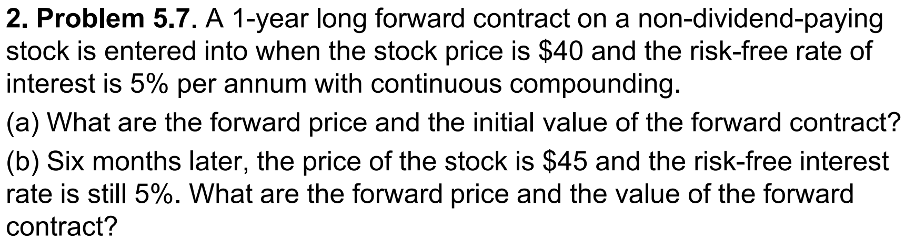
선도가격 \(F=S_0e^{rT}=40e^{0.05}=42.05\), 현재시점의 선도계약의 가치 “0”
6개월 후의 선도가격 \(F=45e^{0.05\times 0.5}=46.14\), 이 때 매수선도계약의 가치는 \(V_t-F_t=4.09\)
Problem 5.10
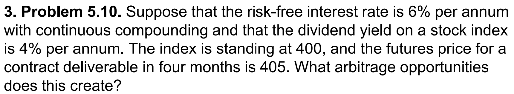
무위험이자율 \(r_f=0.06\), 배당률 \(d=0.04\), 현재 지수가 \(400\)인 경우의 4개월 뒤 만기가 도래하는 주가지수선물의 이론가격은 \(F=400e^{\frac{4}{12}(0.06-0.04)}=402.68\)입니다.
그러나, 현재 주가지수선물의 시장가격은 405로 다소 고평가된 가격에 거래되고 있습니다. 따라서,
현재시점에서 주가지수선물을 405에 매도하고
400만큼 무위험이자율에 자금을 차입하여,
해당 지수를 복제한 주식포트폴리오를 400에 매수한다면,
4개월 뒤에 선물 만기도래시 주식포트폴리오를 405에 매도할 수 있고, 차입금에 대한 이자비용, 주식포트폴리오의 보유기간 동안 배당수익을 모두 합산하면 \(405-402.68=2.32\)만큼의 무위험 차익거래를 할 수 있습니다.
Problem 5.24
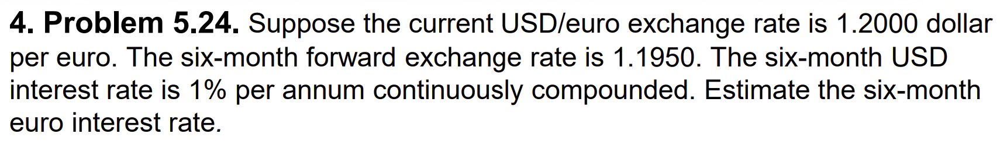
\(S_0=1.2USD/EUR,\;F_0=1.195,\;r_{domestic}=0.01\)이면, 선도가격 수식을 통해 아래와 같이 산출가능합니다.
\[F_0=S_0e^{(r^d-r^f)T}\;\Rightarrow\;1.195=1.2e^{(0.01-r^f)0.5}\;\Rrightarrow\;r^f=0.0184\]
Chapter7 : Swap
Problem 7.1
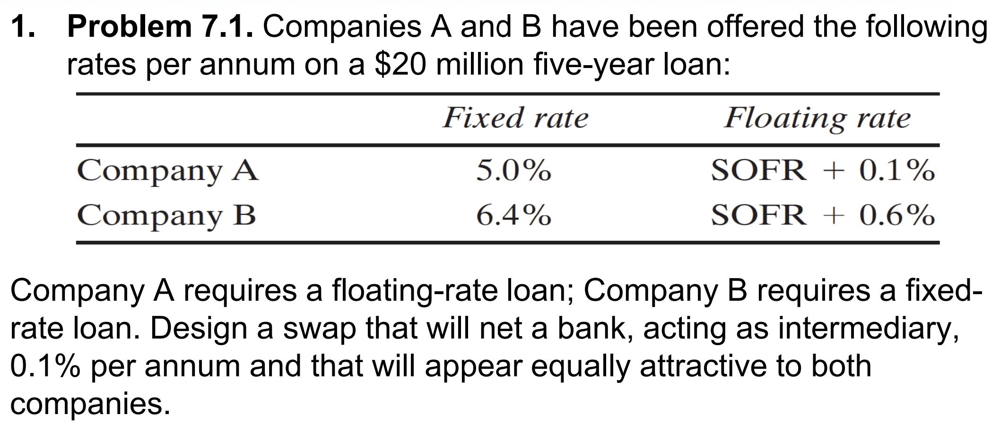
두 회사를 비교하면 A는 Fixed rate에서 1.4%만큼, Floating rate에서 0.5%만큼 절대우위에 있습니다.
이를 다시이야기하면, A는 Fixed rate에서 비교우위가 있고 B는 Floating rate에서 비교우위가 있다는 뜻과 같습니다.
A가 변동금리로 자금을 조달하고자 한다면 비교우위를 이용해서 고정금리로 먼저 돈을 빌리고, B와 스왑계약을 체결하면 됩니다. (A=매도=고정금리수취,변동금리지급)
이 스왑계약이 SOFR와 Swap rate를 주고 받는 스왑이라면, A가 본인이 직접 변동금리로 조달하는 것보다 이익이 발생하는 swap rate는 4.9%보다 크거나 같아야 합니다.
한편, B가 변동금리로 돈을 빌려서 스왑계약을 맺는 경우 B의 이익이 발생하는 swap rate는 5.8% 보다 작거나 같아야합니다.
즉, Swap rate의 범위는 4.9% ~ 5.8%입니다. 여기서 은행이 양 회사를 중개하고 swap rate의 0.1%를 수수료로 받는다면 Swap rate는 5.0% ~ 5.8%에서 결정될 것 입니다.
예를 들어, Swap rate가 5.4%에서 결정되는 경우,
A는 고정금리 5%로 자금을 조달해서 SOFR를 지급하고 5.3% 고정금리를 수취(0.1%는 중개수수료)한다면 SOFR-0.3%에 자금을 조달하는 효과로 0.4%를 아낄 수 있고,
B는 변동금리 SOFR+0.6%에 자금을 조달해서 5.4%를 지급하고 SOFR를 수취한다면, 6.0%에 자금을 조달하는 효과로, 0.4%를 아낄 수 있습니다.
마지막으로, 비교우위간 차분인 0.9%는 스왑을 이용한 비교우위전략으로 누릴 수 있는 총 효용으로 예시에서는 A가 0.4%, B가 0.4%, 중개기관이 0.1%를 나눠서 누리게 됩니다.
Problem 7.4
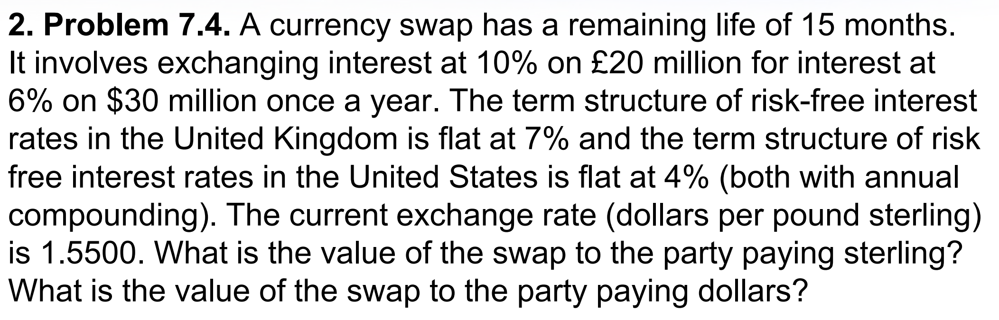
해당 스왑계약은 Fixed-fixed currency swap이며, 현재 스왑계약의 잔존 현금흐름을 살펴보면, 3개월 뒤에 이자교환 + 9개월 뒤에 이자 교환 + 15개월 뒤에 원금과 이자 교환이 남았습니다.
미국을 자국, 영국을 타국으로 보면 \(S_0=1.55,\;r_f^d=0.04,\;r_f^f=0.07\)와 같고, 해당 스왑계약의 가치는 두가지 방법으로 평가할 수 있습니다.
(1) 선도환율을 이용한 현금흐름 방식
먼저 3개월/9개월/15개월 뒤의 선도환율을 각각 계산해보겠습니다.
\[f_{3m}=1.55e^{ln\frac{1.04}{1.07}\times\frac{3}{12}},\;f_{9m}=1.55e^{ln\frac{1.04}{1.07}\times\frac{9}{12}},\;f_{15m}=1.55e^{ln\frac{1.04}{1.07}\times\frac{15}{12}}\]
Interest Compounding method
문제의 이자율은 annual compounding이므로, 연속복리이자율을 사용해서 선도환율을 구하려면 continuous compounding으로 치환해서 이용해야 합니다.
즉, \(1+r_{annual}=e^{r_{continuous}}\;\Rightarrow\;ln(1+r_{annual})=r_{continuous}\)
이제, 기간별 sterling payer의 현금흐름을 살펴보면 아래와 같습니다.
| 구분 | Cash-Inflow | Cash-Outflow | forward rate | Outflow($) | Net |
|---|---|---|---|---|---|
| 3month | $1.8m | S2m | 1.54 | 3.08 | -1.278 |
| 15month | $31.8m | S22m | 1.50 | 32.91 | -1.109 |
마지막으로, Net의 현재가치 -$2.32m가 Sterling payer의 스왑계약 가치가 되며, Dollar payer의 가치는 정확히 반대가 됩니다.
(2) 채권 방식
위의 현금흐름표를 보면, 각 통화의 현금흐름은 채권으로 환산하여 계산할 수 있습니다.
달러채권과 스털링채권의 현재공정가치를 각각 계산하면 아래와 같습니다.
\[Bond_{usd}=\frac{1.8}{(1+0.04)^{\frac{3}{12}}}+\frac{31.8}{(1+0.04)^{\frac{15}{12}}}\]
\[Bond_{sterling}=\frac{2}{(1+0.07)^{\frac{3}{12}}}+\frac{22}{(1+0.07)^{\frac{15}{12}}}\]
Sterling payer의 현금흐름은 달러채권을 사고 스털링채권을 발행하는 것과 동일하므로, 스왑의 가치는 \(B_{usd}-1.55\times B_{sterling}=32.061-1.55\times 22.182=-\$2.321m\)과 같습니다.
Problem 7.8
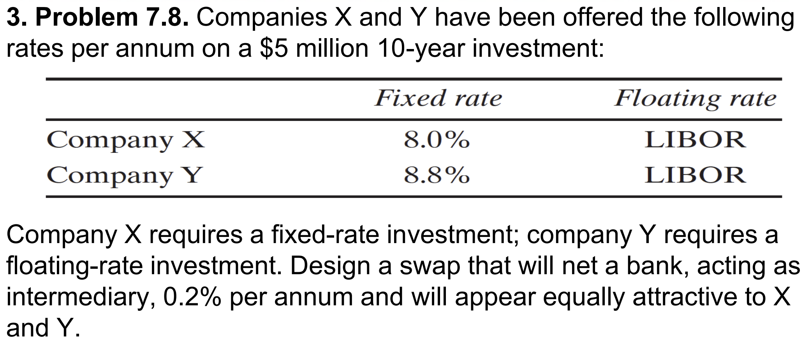
Problem 7-1과 동일한 풀이방법입니다.
고정금리는 X가 0.8%만큼 절대우위에 있고, 변동금리는 동일하므로 자금을 차입할 때의 비교우위는 X가 고정금리에, Y가 변동금리에 있습니다.
해당 상황은 투자이므로, 비교우위 활용은 X가 변동금리에 투자하고 Y와 스왑계약을 맺는 방법으로 이루어집니다.(X=매도=고정수취,변동지급)
스왑계약의 swap rate는 8%~8.8%에서 이루어질 수 있으며, 수수료 0.2%를 감안하면 8.2%~8.8%에서 이루어질 것 입니다.
예를 들어, 8.5%에서 이루어진다면
X는 Libor에 투자하고 (Libor지급-8.3%수취) 스왑계약을 체결한다면 8.3%인 고정금리에 투자하는 효과가 있어 0.3%의 이익이 발생합니다.
마찬가지로 Y는 고정금리 8.8%에 투자하고 (Libor수취-8.5%지급) 스왑계약을 체결한다면 Libor+0.3%에 투자하는 효과가 있어 0.3%의 이익이 발생합니다.
총 효용인 0.8%는 매수자(Y) 0.3%, 매도자(X) 0.3%, 중개인 0.2%로 나누어 가집니다.
Problem 7.21
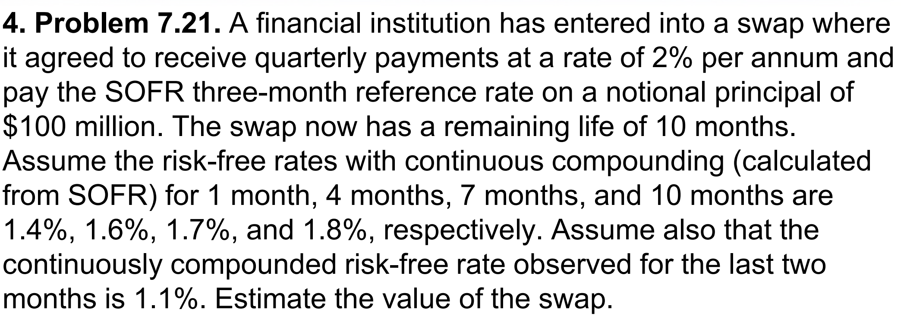
해당 OIS는 OIS rate=2% 및 SOFR를 3개월 주기로 명목금액 $100m에 대해 교환하는 스왑계약입니다.
해당 스왑계약의 가치를 평가하기 위해서는 OIS를 SOFR를 지급하는 FRN과 2%를 지급하는 채권으로 나누어서 각각 평가할 수 있습니다.
SOFR-FRN의 경우, 1개월 뒤 이자를 지급받은 직후에 가격이 Par value로 형성되어야 하는데 이를 이용해서 가치를 평가할 수 있습니다. 1개월 뒤 지급받을 이자는 $0.3m이며 이자지급 직후 SOFR-FRN의 가격은 Par이므로, 현재가치는 \(100.3e^{-0.014\times\frac{1}{12}}=100.1831\)
2% 지급 채권의 경우, \(0.5\sum_{k=1}^4e^{-r_i\times\frac{3k-2}{12}}+100e^{-r_4\times\frac{10}{12}}=100.4956\)
해당 기관은 스왑매도(고정금리 수취, 변동금리 지급)이므로, FRN을 발행하고 2% 채권을 매수한 것과 같습니다. 따라서 스왑계약의 가치는 아래와 같습니다.
\[Value_{OIS}=Bond_{2\%}-FRN=100.4956-100.1831=\$0.3124m\]
OIS vs. Libor-IRS
Libor와 달리 Backward-looking 방식으로 산출되는 SOFR average rate를 이용하여 OIS를 체결하는 경우, 향후 변동금리는 현재시점에서 결정되지 않고 이자지급시점으로부터 과거 3개월간 SOFR를 누적하여 산출합니다.
즉, 10개월이 남은 현재 남은 이자지급시기는 1/4/7/10개월까지 4개인데, 1개월 뒤에 받게 될 변동금리는 과거 2개월 및 주어진 1개월간 SOFR 금리를 누적하여 산출됩니다. \[e^{0.011\times\frac{2}{12}\times e^{0.014\times\frac{1}{12}}}\Rightarrow SOFR_{3month}=\frac{0.022+0.014}{3}=1.2\%\]
Problem 7.22
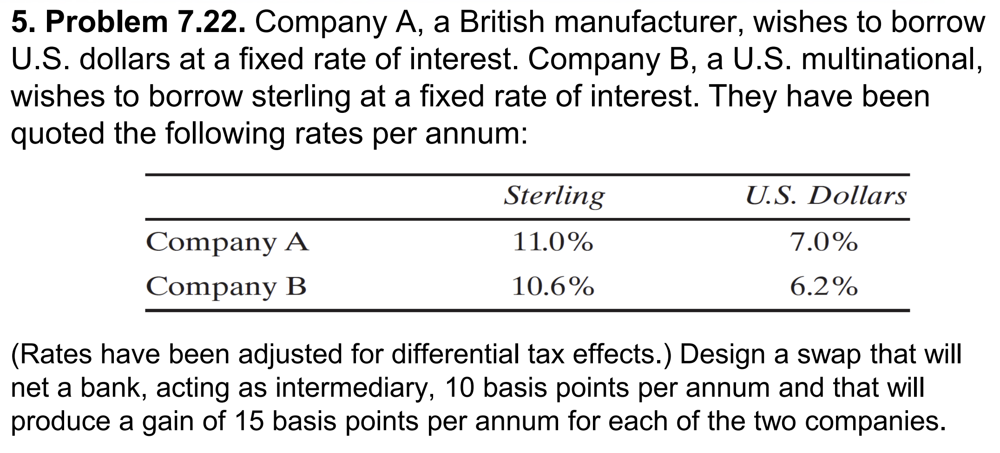
Fixed-fixed Currency swap
A는 USD payer, USD 6.85% pay / Sterling 11.0% receive
B는 Sterling payer, Sterling 10.45% pay / USD 6.2% receive
And, 중개기관은 USD에서 0.65% 이익 / Sterling에서 0.55% 손실 - 0.1% 차익 발생
Problem 7.extra1
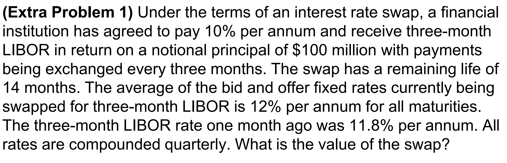
먼저, Libor-IRS의 구조를 Libor만큼 쿠폰을 지급하는 FRN과 Swap rate만큼 쿠폰을 지급하는 채권으로 구분한다면, 스왑계약 개시시점에서 FRN의 가치는 항상 Par value입니다.
개시시점에서 스왑계약의 가치는 0이므로, Swap rate만큼 쿠폰을 지급하는 채권의 가치도 par value가 되어야합니다. 즉, Swap rate는 스왑 개시시점에서 Par rate가 되므로, 이는 동일한 듀레이션을 가지는 채권의 YTM이 됩니다.
현재 bid-offer 중간값이 12%라는 것은 swap rate가 모든 기간에 대해 12%라는 뜻입니다. 즉, 채권의 yield curve가 12%로 flat하다는 의미입니다. 이는 quarterly-compounding 금리로, 연속복리로 표현하면 \((1+0.12/4)^4=e^r\;\Rightarrow\;r=0.1182\)로 쓸 수 있습니다.
이제, 1개월 전 11.8%에 체결된 스왑은 현재시점의 매수자(Swap rate지급, Libor 수취) 입장에서 평가해보면, 14개월 남은 FRN과 11.8% 쿠폰의 채권을 할인율 0.1182를 적용하여 비교하면 됩니다.
현재 FRN의 가치는 par value를 활용해 구할 수 있습니다. 2개월 후 쿠폰이 지급되고 난 직후 FRN의 가치는 par value가 될 것 입니다. 즉, 2개월 후 FRN의 가치는 100+2.95(쿠폰)입니다.
이를 현재가치로 환산하면 \(102.95e^{-0.1182\times\frac{2}{12}}=100.941\)
11.8% 쿠폰의 채권의 현재가치는 아래와 같습니다.
\[2.5(e^{-0.1182\times\frac{2}{12}}+e^{-0.1182\times\frac{5}{12}}+e^{-0.1182\times\frac{8}{12}}+e^{-0.1182\times\frac{11}{12}})\] \[+102.5e^{-0.1182\times\frac{14}{12}}=98.678\]
해당 기관은 Fixed rate payer이므로, FRN을 사고 11.8% 쿠폰의 채권을 매도한 것과 같습니다. 즉, 스왑계약의 가치는 \(FRN-11.8\%\;Note=100.941-98.678=\$2.263m\)
직관적인 풀이방법
한편, Swap rate가 현재 12%라는 것은 현재시점에서 동일한 스왑계약을 체결하면 고정금리가 12%가 된다는 의미입니다.
즉, 1개월 전에 10%를 지급하는 스왑계약을 현재시점에서 다시 체결한다면 12%로 체결해야하므로, 2%만큼 더 지급해야한다는 뜻입니다.
이러한 초과지급분을 모두 현재가치로 환산하면 현재 스왑의 가치가 될 것 입니다. 다만, 2개월 뒤 있을 최초 이자교환분은 이미 1개월 전에 11.8%로 결정되었으므로 초과지급분은 1.8%입니다.
\[0.45e^{-0.1182\times\frac{2}{12}}+0.5(e^{-0.1182\times\frac{5}{12}}+e^{-0.1182\times\frac{8}{12}}+e^{-0.1182\times\frac{11}{12}}+e^{-0.1182\times\frac{14}{12}})\]
Problem 7.extra2
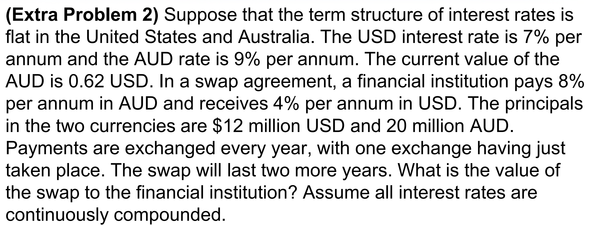
Continuous compounding 금리이므로, 선도환율을 이용하여 현금흐름을 할인하는 방식으로 스왑계약을 평가하겠습니다.
먼저, \(S_0=0.62,\;r_f^d=0.07,\;r_f^f=0.09\)이고 잔여 현금흐름은 1년뒤 이자교환 및 2년뒤 이자+원금교환입니다.
선도환율은 다음과 같습니다.
\[f_{1y}=0.62e^{0.07-0.09},\;f_{2y}=0.62e^{-0.02\times 2}\]
현금흐름을 정리하면 아래와 같습니다.
| 구분 | Cash-Inflow | Cash-Outflow | forward rate | Outflow($) | Net |
|---|---|---|---|---|---|
| 1year | $0.48m | AUD 1.6m | 0.608 | 0.972 | -0.492 |
| 2year | $12.48m | AUD 21.6m | 0.596 | 12.867 | -0.387 |
달러로 표시된 Net의 현재가치 -$0.795m가 스왑계약의 가치가 됩니다.
Chapter10 : Mechanics of Options Markets
Problem 10.3, 10.13
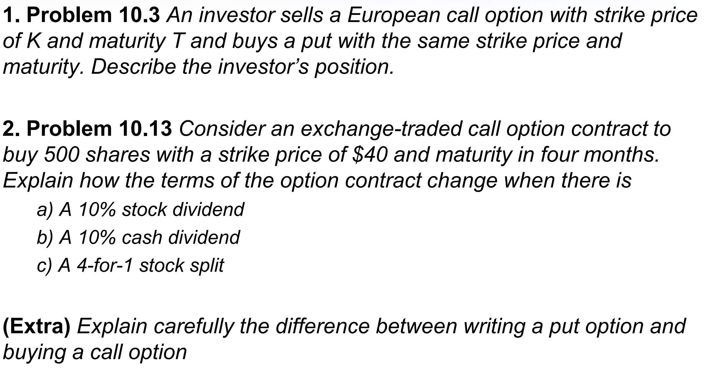
10.3
만기 T, 행사가격 K의 유럽형 콜옵션을 매도하고 풋옵션을 매수하는 경우 만기 Pay-off를 정리하면 아래와 같습니다.
\[-Max(S_T-K,0)+Max(K-S_T,0)=K-S_T\]
즉, 현재시점에서 액면 K의 무이표채에 투자하고 현물을 공매도하는 것과 동일한 포트폴리오입니다.
Tip
Put-call parity : \(c+Ke^{-rT}=p+S_0\Rightarrow p-c=Ke^{-rT}-S_0\)이므로, 위와 동일한 결과를 얻을 수 있습니다.
10.13
문제의 옵션은 만기는 4개월, 행사가격 40usd 및 거래승수 500에 대한 유럽형 콜옵션입니다.
만기 내 주식배당이 발생하는 경우, 행사가격 및 거래승수 변경을 통해 옵션 보유자의 손익을 보전합니다. 10%의 주식배당이 있으므로 콜옵션의 행사가격은 \(40\times\frac{10}{11}\), 거래승수는 \(500\times\frac{11}{10}\)으로 조정되고 손익에는 영향이 없습니다.
만기 내 10%의 현금배당이 있는 경우, 별도의 옵션포지션 조정은 없으며 배당락으로 주가가 10%만큼 하락할 것 입니다. 따라서 콜옵션의 가치는 하락합니다.
만기 내 4-for-1 주식분할이 발생하는 경우, 행사가격 및 거래승수 변경을 통해 옵션 보유자의 손익을 보전합니다. 주식 보유자는 3주를 추가로 받게되므로, 행사가격은 \(40/4=10\), 거래승수는 \(500*4=2000\)이 됩니다. 손익에는 영향이 없습니다.
Extra
콜매수와 풋매도는 모두 주가 상승시 포지션의 가치가 상승하는 구조입니다. 그러나 두 포지션은 근본적으로 권리를 가지고 있는지, 권리가 상대방에게 있어 계약이행의무만 있는지에 대한 차이가 있습니다.
콜옵션 매수 포지션은 권리를 가지고 있으며, 이에 따라 옵션 매수시 가격(프리미엄)을 매도자에게 지급하므로 초기비용이 발생합니다. 주식 가격이 상승하면 권리를 행사하여 이익을 실현할 것이고, 주식 가격이 행사가격보다 낮으면 권리를 포기함으로써 손실을 회피할 것 이므로 손실의 최대폭은 매수시 지불한 프리미엄으로 한정됩니다.
풋옵션 매도 포지션은 계약이행의무만 있으며, 이에 따라 옵션 매도시 프리미엄을 받게 되므로 초기수익이 발생합니다. 주식 가격이 상승하면 계약상대방은 권리행사를 포기하므로 프리미엄만큼 확정이익이 발생하고, 주식 가격이 행가가격보다 하락하면 계약상대방이 권리행사를 하게되므로, 손실이 발생합니다. 이익은 프리미엄으로 상한이 있으나 주가 상승에 따른 손실은 하방이 없습니다.
Chapter11 : Properties of Stock Options
Problem 11.5, 18, 23, 24, 25

11.5
내재가치(intrinsic value)는 옵션을 현재시점에 권리행사한다면 얻을 수 있는 이익입니다. 따라서, 현재시점을 \(t\)라고 하면, 콜옵션의 내재가치는 \(max(S_t-K)\)입니다.
미국형 옵션은 옵션매수자가 원하는 때에 권리행사를 할 수 있으므로, 즉시 권리행사를 한다면 항상 내재가치만큼의 이익을 실현할 수 있습니다. 따라서 내재가치가 옵션가치의 하한이 됩니다.
한편, 유럽형 옵션은 만기시점에만 권리행사를 할 수 있으므로 기초자산에서 배당과 같은 중도현금흐름이 발생하면 옵션의 시간가치가 (-)로 형성될 수 있고, 이에 따라 내재가치보다 낮게 형성될 수 있습니다.
예를 들어, 다음달 배당이 예정된 주식에 대한 만기 2개월의 콜옵션을 보유하고 있다면 배당락이 발생하기 전에 권리행사를 통해 내재가치만큼 이익을 얻고, 배당수익도 누리는 것이 최적의 선택일 것입니다. 그러나, 유럽형 옵션은 만기까지 권리행사할 수 없으므로 이러한 콜옵션의 가격은 현재 내재가치보다 낮게 형성될 것 입니다.
11.18
?@sec-AmericanParity
11.23
각 파라미터는 \(T=1,\;S_0=130,\;K=120,\;c=20,\;p=5\)이므로, 풋콜패리티를 이용하면 다음과 같이 정리할 수 있습니다.
\[c+Ke^{-rT}=p+S_0\;\Rightarrow\;20+120e^{-r}=5+130 \Rightarrow r=\ln{\frac{120}{145}}\approx 4.26\%\]
11.24
각 파라미터는 \(T=\frac{1}{4},\;K=20,\;r=0.1,\;S_0=19,\;D=1e^{-0.1/12},\;c=3,\;p=3\)입니다.
풋콜패리티를 이용하여 콜옵션의 가치를 평가해보면,
\[c+Ke^{-rT}+D=p+S_0\;\Rightarrow\;c+20e^{-0.025}+e^{-0.1/12}=3+19\;\Rightarrow\;c\approx 1.495\]
그러나, 현재 콜옵션의 시장가격이 3이므로 고평가되어있는 상태입니다.
따라서, (1) 콜옵션을 매도하고, 이와 동시에 (2) 풋옵션과 주식을 매수, 행사가격과 배당의 현재가치(\(Ke^{-rT}+D\))만큼의 무이표채권을 발행(자금을 차입)한다면, 현재시점에 1.505만큼 무위험차익을 얻을 수 있습니다.
즉, 현재시점에 1.505만큼 수익이 발생하고 만기시점의 pay-off는 0이 됩니다.
11.25
만기 Payoff를 살펴보면 확인 가능합니다.